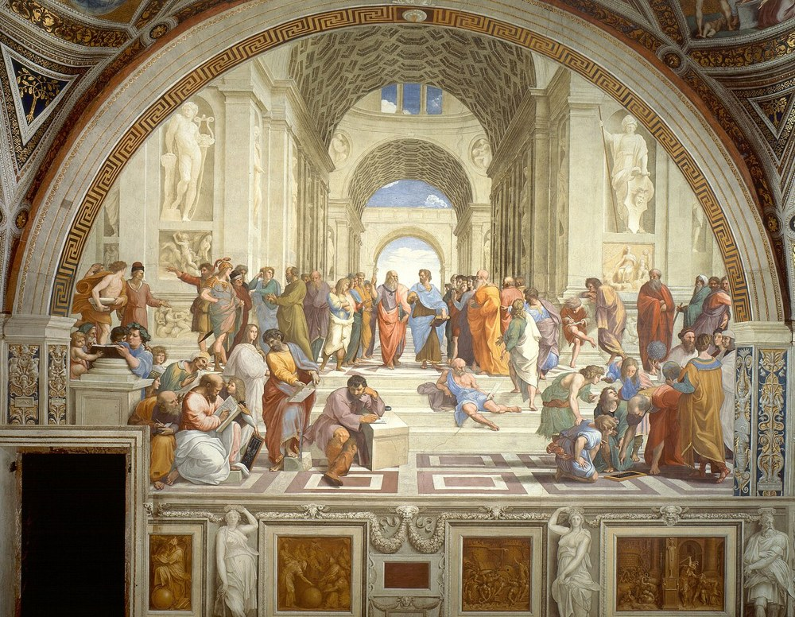

전성기 르네상스 (High Renaissance)

쉽게 풀면
르네상스가 가장 완벽하고 균형 잡힌 모습으로 꽃핀 시기로, 모나리자나 시스티나 성당 천장화가 이때 그려졌다.
왜 중요한가
전성기 르네상스는 1490년대~1520년대 레오나르도·미켈란젤로·라파엘로·브라만테의 작업을 가리키는 시기 구분으로, 바사리가 '제3의 시대'로 규정하고 뵐플린의 『고전미술』(1899)이 조화·균형·기념비성이라는 고전적 양식 원리로 체계화했다.
서양 미술사 서술의 정점으로 기능해 이후 매너리즘과 바로크가 이에 대한 이탈이나 발전으로 정의되었으며, 시기 구분의 타당성 자체가 방법론적 쟁점이다. 로마 교황청 후원과 인문주의 궁정 문화 연구의 중심 국면이다.
핵심 주장
- 전성기 르네상스는 대략 1490년대에서 1520년대까지, 로마와 피렌체를 중심으로 레오나르도 다빈치, 미켈란젤로, 라파엘로, 브라만테가 활동한 시기를 가리키는 미술사의 시기 구분이다. 대표작으로 레오나르도의 「최후의 만찬」, 미켈란젤로의 시스티나 성당 천장화, 라파엘로의 「아테네 학당」이 꼽힌다.
- 양식의 핵심은 균형, 조화, 기념비성, 이상화된 형태미이다. 초기 르네상스가 실험한 원근법·해부학·자연 관찰을 하나의 안정된 구성으로 종합했다고 평가된다. 레오나르도의 스푸마토와 소묘(디세뇨)를 중시한 구성(디세뇨)이 자주 언급된다.
- 이 개념은 미술을 탄생–성숙–쇠퇴의 발전 과정으로 보는 서술과 함께 자리 잡았다. 바사리는 레오나르도 이후를 ‘제3의 시대’로 규정했고, 뵐플린은 『고전미술』(1899)에서 조화·균형·기념비성을 고전 양식의 원리로 체계화했다.
- 이 시기를 정점으로 놓으면 뒤의 매너리즘과 바로크는 이탈이나 변형으로 서술된다.
근거와 대표 연구
- 개념의 근거: Vasari(1568)의 『미술가 열전』이 시대 구분의 원형을 제공했고, Wölfflin(1899)이 양식 분석의 언어를 제시했다.
- 20세기 중반의 종합: Freedberg(1961)는 로마와 피렌체의 회화를 중심으로 이 시기의 양식을 상세히 분석했고, 그 과정에서 ‘고전적’ 양식의 의미와 시기 구분 문제도 논의되었다.
- 후속 구분: Shearman(1967)은 매너리즘을 이 시기의 쇠퇴가 아니라 독자적 양식으로 보는 시각을 제시해, 전성기 르네상스를 규범으로 삼는 서술에 대한 대안을 열었다.
- 맥락 연구: 교황청 후원, 인문주의 궁정 문화, 공방 제도와 작품 의뢰 관계를 다루는 연구가 이 시기를 이해하는 한 축이다.
전성기 르네상스의 시작은 보통 1490년대나 1500년대 초로 잡고, 끝은 1520년 라파엘로가 죽은 때로 보는 견해가 많다. 1525년, 1527년, 1530년을 끝으로 잡는 학자도 있다. 중심지는 교황령의 수도 로마와 피렌체였고, 교황 율리우스 2세가 라파엘로의 바티칸 프레스코와 미켈란젤로의 시스티나 예배당 천장화를 주문했다. 대표작의 연대는 레오나르도의 〈최후의 만찬〉(약 1495~1498), 미켈란젤로의 〈피에타〉(1498~1499)와 〈다비드〉(1501~1504), 레오나르도의 〈모나리자〉(약 1503~1507), 시스티나 천장화(1508~1512), 브라만테의 템피에토(1510년 착공), 라파엘로의 방 장식(1509~1524, 〈아테네 학당〉 포함)이다.
비판과 한계
- 기간이 약 30년으로 짧고 소수 거장에 집중된 개념이어서, 미술사의 규범적 정점으로 세우는 것은 바사리·뵐플린식 고전주의 가치관의 투영이라는 비판이 크다.
- 범위가 일정하지 않다. 베네치아(조르조네, 티치아노)를 포함하는지, 종점을 라파엘로의 사망(1520)으로 볼지 1527년 로마 약탈로 볼지가 논자마다 다르다.
- ‘완성된 조화’라는 이미지와 달리 레오나르도와 미켈란젤로의 작업 가운데 미완성으로 남은 것이 많다는 점이 지적되며, 최근 연구는 이 시기의 실험성과 불안정성을 강조한다.
- 르네상스 전체를 대표한다고 확대 해석하면 안 된다. 북유럽의 흐름(북유럽 르네상스)은 다른 기준으로 전개되었다.
1527년 카를 5세의 반란 군대가 로마를 약탈한 사건으로 예술가들이 흩어졌고, 이를 시기의 끝으로 보는 역사가도 있다. 이 시기를 서양 회화의 절정이라 부르는 평가는 최근 역사가들에게 지나치게 단순하다고 비판받는다.
논문에서는 이렇게 쓰입니다
실제 논문에서
국내 학술지 논문에서 이 용어가 쓰인 문장을 그대로 옮겼다. 제목·학술지·연도와 원문 링크를 함께 적었다.
“급변화를 통해 상상력에 관한 관심이 부상하는 것은 전성기 르네상스로 들어서는 16세기이다.”
초기 르네상스의 판타지아와 상상력: 심리학과 예술 사이에서, 철학연구, 2025 · KCI 한국학술지인용색인 · 원문 보기 ↗
예시 문장
아래 예문은 용어의 쓰임을 보이려고 만든 것으로, 실제 논문 문장이 아니다.
전성기 르네상스는 소묘 중심의 구성과 이상화된 자연주의를 종합했으며, 레오나르도의 스푸마토와 미켈란젤로의 기념비적 인체 표현이 그 대표 사례라는 뜻이다.
라파엘로가 그린 인물들이 화면 안에서 안정적이고 조화롭게 배치되어 있으며, 공간감을 나타내는 원근법과 결합되어 이 시기 특유의 균형 잡힌 양식을 대표한다는 뜻이다.
조금 더 깊게 보면
전성기 르네상스는 약 30년의 짧은 기간이고 소수 거장에 집중된 개념이어서, 미술사의 규범적 정점으로 세우는 것은 바사리·뵐플린식 고전주의 가치관의 투영이라는 비판이 강하다. 베네치아(조르조네, 티치아노)를 포함하는지, 1527년 로마 약탈이 종점인지도 논자마다 다르다. 레오나르도와 미켈란젤로의 작업 대부분이 미완성이었다는 사실은 '완성된 조화'라는 이 시기의 이미지와 어긋나며, 최근 연구는 이 시기의 실험성과 불안정성을 강조한다.
주의할 점
전성기 르네상스는 매우 짧은 기간(약 30년)에 소수의 거장에 집중된 개념으로, 르네상스 전체를 대표한다고 확대 해석하면 안 된다.
헷갈리기 쉬운 용어
르네상스 시기 구분은 이름이 비슷해 겹쳐 쓰이기 쉽다.
| 용어 | 시기·지역 | 성격 |
|---|---|---|
| 전성기 르네상스 | 1490년대~1520년대, 로마·피렌체 | 균형·조화·기념비성의 정점으로 평가 |
| 초기 르네상스 | 15세기, 피렌체 중심 | 원근법과 해부학적 사실주의의 실험 |
| 매너리즘 | 16세기, 전성기 르네상스 이후 | 인위적 비례, 불안정한 구도 |
| 북유럽 르네상스 | 알프스 이북(플랑드르·독일·네덜란드) | 유화 기법과 세밀한 사실주의 |
| 르네상스미술 | 14세기 말~16세기, 유럽 전역 | 상위 개념 |
참고 문헌
- Vasari, G. (1568). Le vite de' più eccellenti pittori, scultori e architettori (2nd ed.). Giunti.
- Wölfflin, H. (1899). Die klassische Kunst: Eine Einführung in die italienische Renaissance. Bruckmann.
- Freedberg, S. J. (1961). Painting of the High Renaissance in Rome and Florence (2 vols.). Harvard University Press.
- Shearman, J. (1967). Mannerism. Penguin Books.
- Wikipedia contributors. (n.d.). High Renaissance. In Wikipedia, The Free Encyclopedia.
표의 기준값은 위 문헌에 따른 관례이고, 분야·학술지마다 기준이 다를 수 있다.